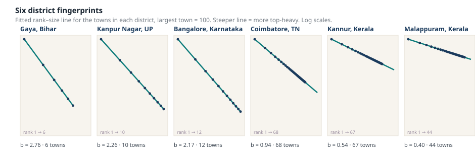
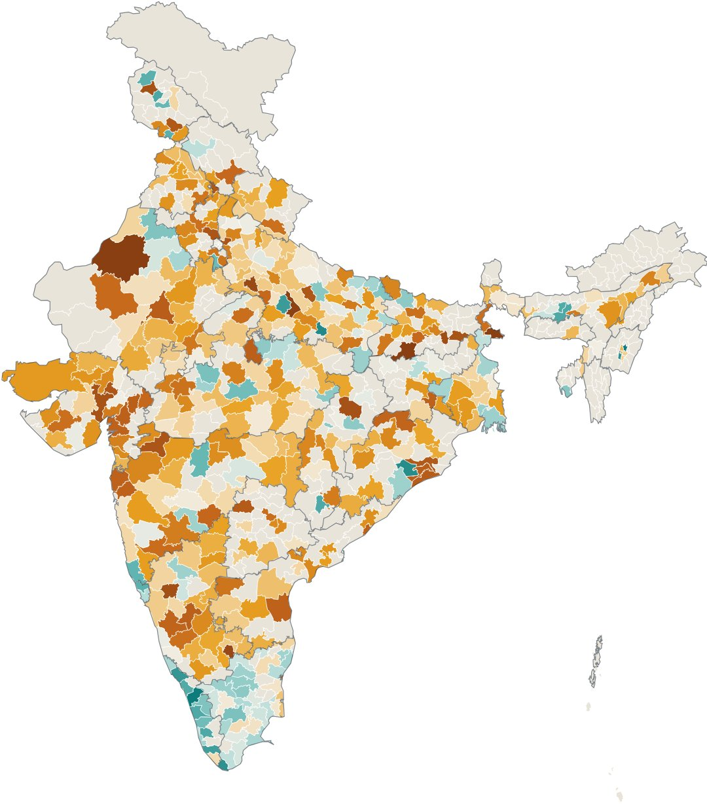
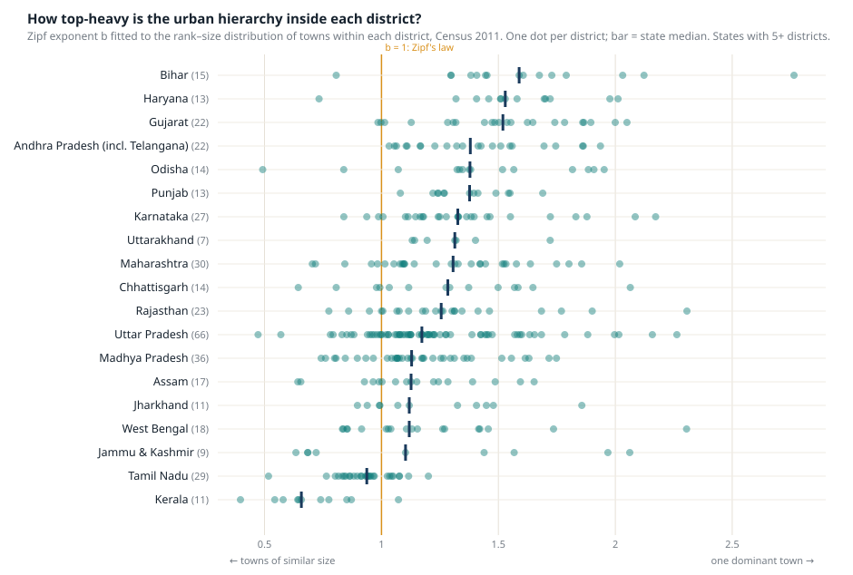

- We fitted Zipf's law to the towns inside each of 415 Indian districts. The exponent b tells you whether a district is dominated by one town (high b) or made of many similar ones (low b).
- The national median is 1.22, a little more top-heavy than Zipf's law predicts. But the range runs from 0.39 in Imphal East to 2.76 in Gaya.
- Kerala and Tamil Nadu have flat hierarchies almost everywhere; Bihar, Haryana and Gujarat are the most top-heavy. The north–south divide in how India urbanises is visible inside districts, not just between cities.
- Districts with more towns are flatter. Where urbanisation has spread across many settlements, no single town has run away with it.
Ask someone to picture “urban India” and they will picture Mumbai, or Delhi, or perhaps the IT corridors of Bengaluru. Most of urban India looks nothing like that. The 2011 Census counted close to eight thousand towns, and the large majority of them have fewer than a hundred thousand people. How those towns are arranged, whether a district has one town that matters and a scatter of villages with municipal status, or a dense web of medium-sized towns with no obvious capital, says a great deal about how its economy works and what kind of planning it needs.
We wanted a single number that captures this, for every district in the country. The tool is an old one.
Zipf’s law, in one paragraph
Rank the towns in a region by population, largest first. For a surprising number of regions, the second town is about half the size of the first, the third about a third, the tenth about a tenth. Plot size against rank on logarithmic axes and you get a straight line with a slope of minus one. That regularity is Zipf’s law, and the slope, called b, is the number we are interested in.
When b is 1, the region follows Zipf’s law. When b is well above 1, the line is steeper: the top town is far bigger than the rest, and sizes fall away quickly down the ranking. When b is well below 1, the line is flat: the towns are of similar size and no single one dominates. The number is a compact description of hierarchy.
We computed it for every district with at least six towns in the Census of 2011, using the SHRUG database, which gives 415 districts across 29 states and union territories. The fit is good in most places: the median R² is 0.93.
Two kinds of district
The national median b is 1.22, a touch more top-heavy than a textbook Zipf distribution, and about a fifth of districts sit between 0.9 and 1.1, close to the law. The interesting part is the tails.

Fitted rank–size lines for the towns in six districts, with the largest town set to 100. The steeper the line, the more the largest town dominates. Source: CEL Lab, from SHRUG / Census 2011.At one end is Gaya, in Bihar, with the highest b in the country at 2.76. Gaya has six census towns; the city of Gaya is the only one of consequence and the rest are small. Kanpur Nagar (2.26) and Bangalore district (2.17) are the same shape at a larger scale: one metropolis, surrounded by towns that are tiny by comparison. Fifteen districts have a b above 2. Six of them are in Bihar and Uttar Pradesh, and the list also includes metropolitan districts such as Ahmedabad and Ghaziabad, where one city has outgrown everything around it.
At the other end is Kerala. Malappuram has a b of 0.40 across 44 towns; Kannur 0.54 across 67. Kollam, Kottayam, Thrissur and Kozhikode all sit below 0.7, and only Thiruvananthapuram, with the state capital, reaches Zipf’s law. These districts are densely urban, but there is no city at the top; there is a continuous carpet of towns of similar size, which is what the long-observed “rural–urban continuum” of Kerala looks like when you measure it. Tamil Nadu is the same story a little less strongly: Kanniyakumari has 91 towns and a b of 0.52, and even Coimbatore, with one of the state’s largest cities, comes out at 0.94, close to Zipf, because it has 68 towns behind the city rather than a handful.
Kerala’s districts are densely urban, but there is no city at the top. There is a carpet of towns of similar size.
The map inside the map
Put the districts on a map and the pattern is not random.

Districts coloured by b: teal where towns are of similar size, orange to brown where one town dominates, grey where there were fewer than six towns in 2011. Districts created after 2011 carry the value of the 2011 district they were carved from. Explore any district in the interactive version.The south is teal and the north and west are orange. Grouped by state, the same thing in numbers:

One dot per district; the dark bar is the state median. States with at least five districts. Source: CEL Lab, from SHRUG / Census 2011.The states with the most top-heavy districts are Bihar (median b of 1.59), Haryana (1.53) and Gujarat (1.52), followed by Andhra Pradesh, Odisha and Punjab around 1.4. The flattest are Kerala (0.66) and Tamil Nadu (0.94), with nothing else close. Uttar Pradesh, Madhya Pradesh, West Bengal and the north-east sit in the middle, near 1.1 to 1.2, but with wide spreads: Uttar Pradesh’s 66 districts run all the way from Kaushambi at 0.47 to Kanpur Nagar at 2.26.
Economists have long described a north–south difference in Indian urbanisation: the south urbanised earlier, more evenly and through many smaller towns, the north later and more through a few large cities. What this exercise shows is that the difference is not only between big cities. It is present at the scale of the district, in how the dozen or so towns of an ordinary district are arranged relative to one another.
There is a mechanical part of the explanation, and it is worth being honest about it. Districts with more towns have flatter hierarchies: the correlation between b and the number of towns is about −0.3. Kerala’s districts have many towns partly because the Census classifies so much of Kerala as urban. But the number of towns is itself an outcome of how settlement has spread, so this is less a statistical artefact than a restatement of the finding. Where urbanisation has diffused across many places, no single place has run away with it.
Why the number is useful
A district with a b of 2 and a district with a b of 0.5 need different things.
In the top-heavy district, the main town carries the services, the jobs and the migrants for the whole district. Planning questions are about that town: its housing, its transport, its capacity to absorb growth. The smaller towns are satellites and their prospects depend on the connection to the centre.
In the flat district there is no centre to plan around. Services have to be distributed across many towns of similar weight; connectivity between them matters more than connectivity to any one of them; and growth, when it comes, arrives in several places at once. Policies designed for the first kind of district, such as the Smart Cities Mission’s focus on single municipalities, fit the second kind badly.
This is why we built the measure. The lab’s work on how cities grow, on where people can reach services, and on how a district’s economic character shapes its population distribution all needs a way of saying what kind of urban system a place has before asking how it is changing. One number does not describe a district, but this one tells you which of two very different stories you are in.
A note on the data. Towns and populations are from the SHRUG database (Development Data Lab), harmonised to Census 2011. Zipf's exponent b is estimated by ordinary least squares on log population against log rank for each district with at least six towns; districts with fewer towns are excluded, which removes most single-city districts such as Mumbai and Chennai. Twenty-seven districts have an R² below 0.8 and their estimates should be read with care; Bangalore's is 0.75. Every district's estimate and fitted line can be looked up in the district urban hierarchy explorer.
More from the blog

Before the master plan: what Pataliputra, Puhar and Dhar knew about making cities
Three Indian texts, written between the fourth century BCE and the eleventh century CE, describe cities with zoned land use, graded road widths, covered drains, rain gauges and rules for taking in migrants. A reading of the Arthashastra, the Chola sources and the Samarangana Sutradhara.

Who really pays? When the edge of the city is taxed harder than the centre
In Gaya, the effective tax on cheap peripheral land is four times the rate on the city's best addresses. In Coimbatore and Ranchi, centre and edge pay the same. The design of a vacant land tax decides whether it pushes cities inward or lets them spread.

The frozen tax
Delhi has not revised its vacant-land tax rates since 2004. Patna's go back to 1993. Across our 38-city database, the commonest thing a city does with this tax is nothing, for years, and then everything at once.